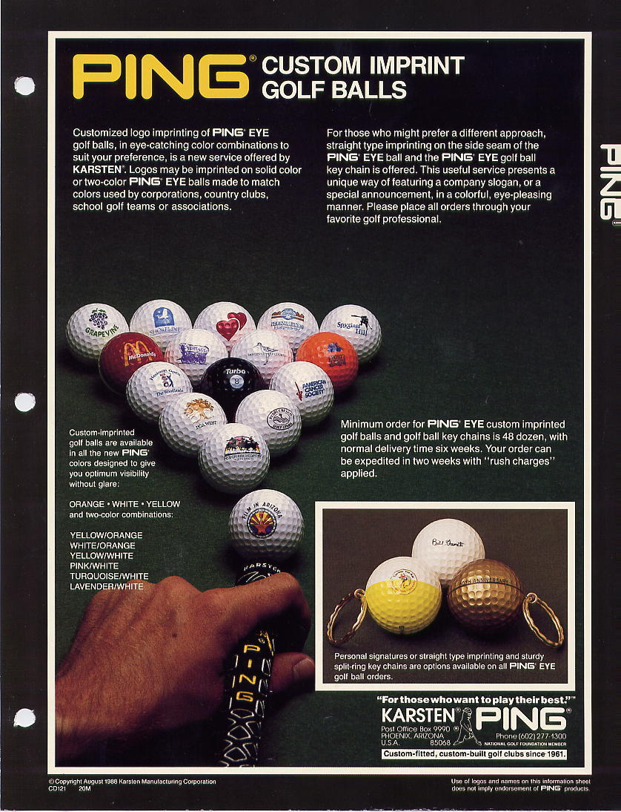
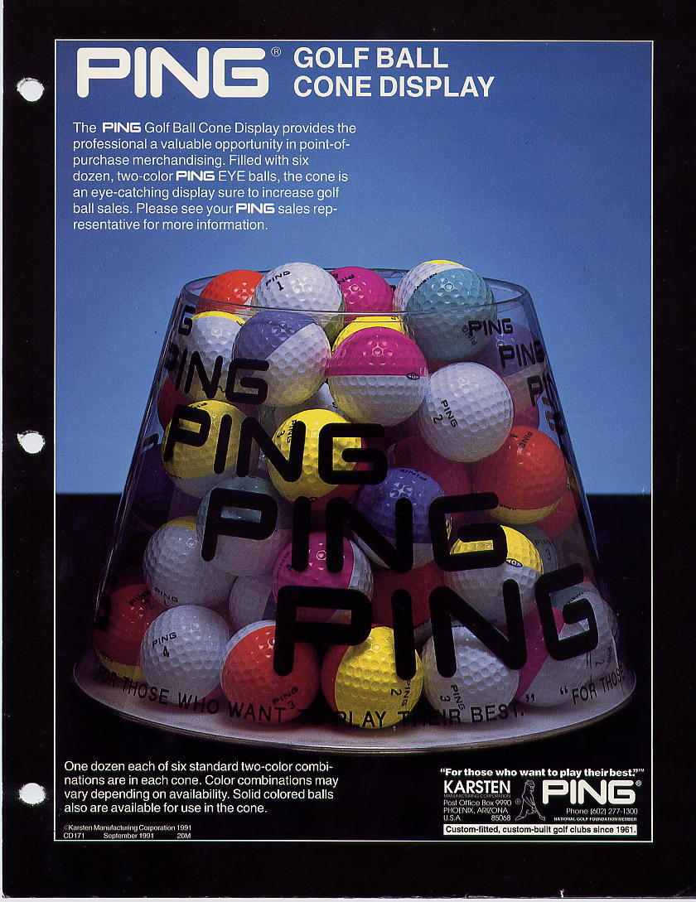
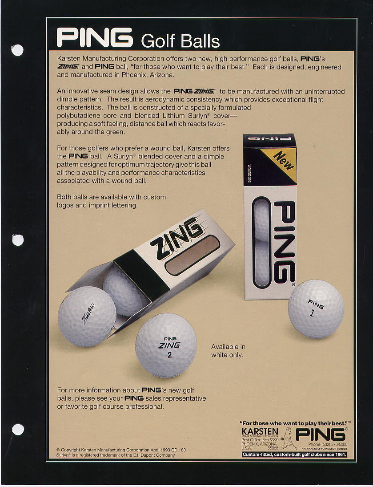
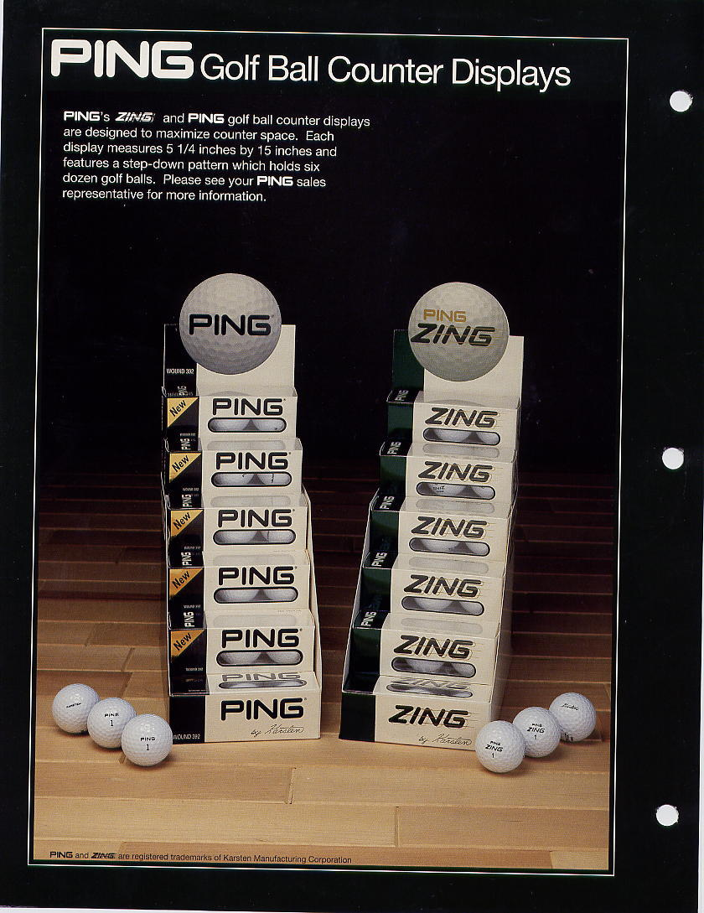
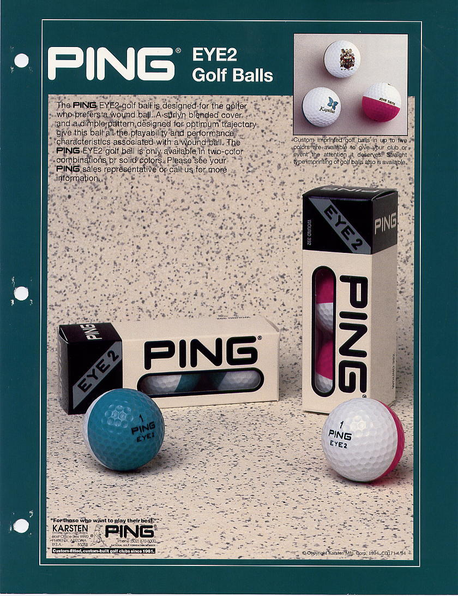
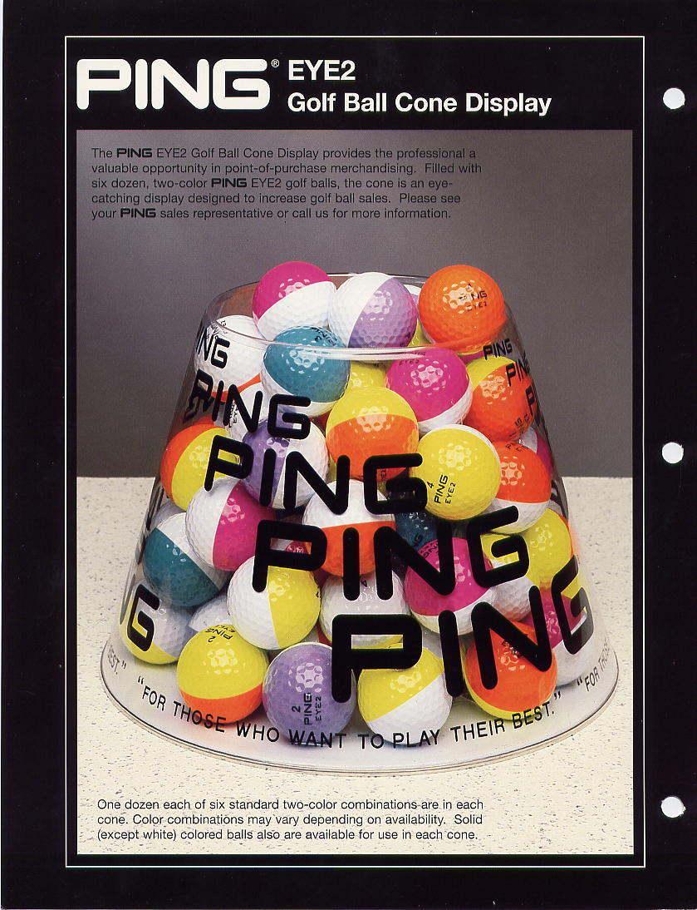
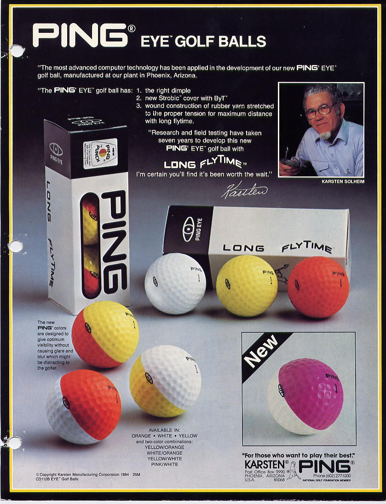
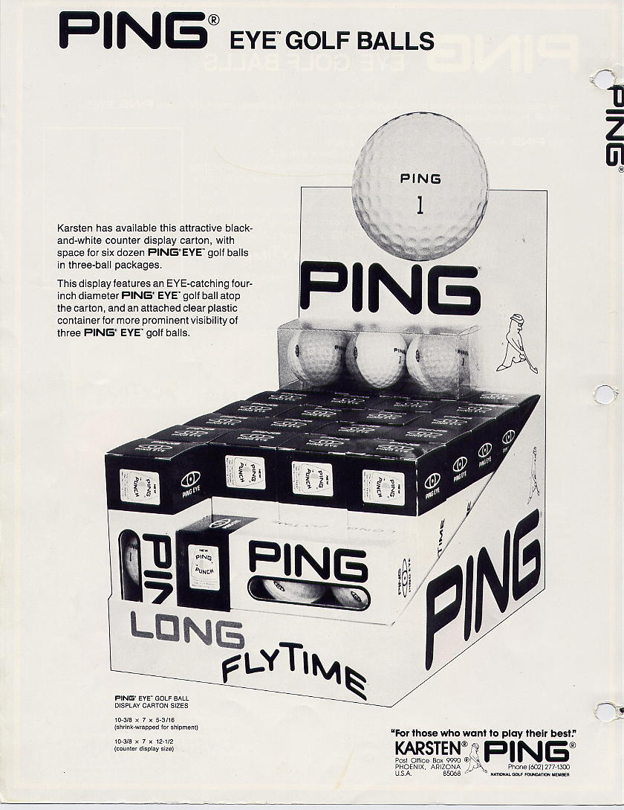

Karsten started producing Ping balls in 1976/77 and production ceased in 1997.
Ball Models
During the production years, several ball models were created:
- Ping Eye — The original two-color golf ball that started the collecting craze.
- Ping Eye2 — The successor with a shorter production run, making Eye2 color combinations generally more rare.
- Ping Zing — A different dimple pattern; colored Zing balls were not painted or sold by Ping other than white.
- CT374 — A later model available in limited solid colors like yellow and orange.
- Promotional (Promo) — Balls that had minor quality issues but were distributed for junior programs and promotions.
Production Notes
Colored balls were made for customer orders, not for stock. Karsten had basic colors and mixed powder in to change colors, which is why there are far more than the 72 color combinations that Karsten officially acknowledged.
The golf ball making equipment has been removed from the Karsten plant. The building formerly used for Ping golf ball production is now used for club production. Learn more about the man behind it all on our Karsten Solheim page.
Vintage Ping Advertisements
Original Karsten catalog pages and Ping golf ball advertisements.








Continue Exploring
- 🎨 Colors & Values Price Guide — See all 250+ color combinations with rarity ratings and values
- ❓ Frequently Asked Questions — Common questions about Ping ball rarity and identification
- 📷 Rare Balls — Factory rejects and unusual color combinations from tour giveaways
- ⚪ Nike Mojo & Karma Balls — The spiritual successor to colored Ping balls